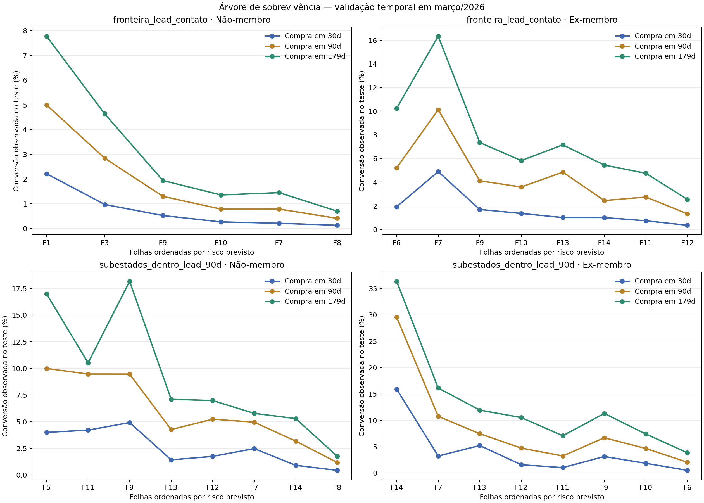

O Insider reúne 6,14 milhões de pessoas identificadas e a operação não deve tratá-las todas como leads. Este documento define a regra vigente, registra sua evidência e separa com clareza o que ainda precisa ser validado.
0
Definição canônica · leitura rápida
A regra vigente, sem depender dos gráficos
Lead ativo é toda pessoa identificada, não cliente, que realizou pelo menos uma interação voluntária qualificada nos últimos 90 dias.
Os estados são exclusivos e aplicados por precedência. Lead ativo total = Oportunidade + Prospect + Somente Lead.
1 · Cliente
Possui pelo menos uma assinatura ativa na data da fotografia. Não participa da régua de aquisição.
2 · Oportunidade
Não é Cliente e teve fundo de funil há 0–15 dias: conversa comercial qualificada, carrinho, boleto ou tentativa de pagamento.
3 · Prospect
Não está acima e visitou produto/oferta há 0–90 dias, ou teve fundo de funil há 16–90 dias.
4 · Somente Lead
Não está acima e teve outro sinal voluntário qualificado há 0–90 dias.
5 · Contato de reativação
Está há mais de 90 dias sem sinal qualificado, mas possui ao menos um canal próprio de CRM vivo.
6 · Contato inativo
Está fora da janela ativa e não possui canal próprio de CRM vivo. Sai da régua de CRM, sem ser apagado da base.
O que reinicia o relógio?
Toda nova interação voluntária qualificada. Um novo fundo de funil também promove imediatamente a pessoa a Oportunidade.
O que acontece com o tempo?
Fundo de funil: Oportunidade em 0–15 dias, Prospect em 16–90 dias e Contato após 90 dias se não houver outro sinal.
O que sustenta 90 dias?
Conversão e reengajamento localizaram a mudança comportamental principal entre 71 e 83 dias; 90 é o arredondamento operacional conservador.
O que ainda está em validação?
Os subestados de Oportunidade e Prospect. A primeira árvore não validou o corte de 15 dias; agora os eventos serão auditados e os estados recalibrados por público.
Status em 04/09/2026: regra operacional v1 vigente. A fronteira externa de 90 dias está sustentada; a hierarquia interna é provisória. Estoque de 03/09: 600.012 Leads ativos — 19.951 Oportunidades, 122.110 Prospects e 457.951 somente Leads. A árvore foi ajustada em 700.923 snapshots, com teste temporal em mar/2026. As relações observadas são preditivas, não causais.
0.1
Teste novo · árvore de sobrevivência
A fronteira funciona; os subestados ainda não
Decisão que permanece: aos 90 dias sem interação voluntária qualificada, a pessoa deixa de ser Lead ativo. Decisão ainda provisória: usar 15 dias e a mesma hierarquia Oportunidade → Prospect → Somente Lead nos dois públicos.
Fronteira externa · ex-membro
85,5 dias
Primeiro corte da árvore de sobrevivência. É compatível com o arredondamento operacional para 90 dias.
Fronteira externa · não-membro
Não é única
A árvore combina tipo de evento e recência; sem funil/comercial recente, encontrou cortes em 30,5 e 156,5 dias.
Oportunidade × Prospect
Sem diferença
No holdout de mar/2026, p=0,537 para não-membros e p=0,878 para ex-membros em conversão até 179 dias.
Ex-membro · alerta
9,85%
Somente Lead converteu mais que Prospect (6,50%) e Oportunidade (6,37%) em 179 dias. A hierarquia atual falha nesse público.
Não-membro · conversão em 179 dias
Oportunidade e Prospect se sobrepõem; as quedas para Somente Lead e Contato são estatisticamente claras.
Ex-membro · conversão em 179 dias
Somente Lead é o grupo com maior conversão. A ordem esperada Oportunidade → Prospect → Somente Lead não aparece.
Conversão observada no teste temporal · compra em até 179 dias
Não-membro
Oportunidade 10,43% · Prospect 9,32% · Somente Lead 1,88% · Contato 0,82%. Prospect > Somente Lead > Contato é estatisticamente sustentado.
Ex-membro
Oportunidade 6,37% · Prospect 6,50% · Somente Lead 9,85% · Contato 3,67%. Os eventos precisam ser reclassificados antes de fixar os subestados.
Árvore de sobrevivência com treino em set–dez/2025, seleção em jan–fev/2026 e teste final em mar/2026. C-index no teste: 0,655 para não-membro e 0,633 para ex-membro. Resultado preditivo e observacional; não mede efeito causal da comunicação.
Abrir o gráfico técnico completo da árvore
Cada ponto é uma folha da árvore, ordenada pelo risco previsto. As linhas mostram a conversão realmente observada no holdout em 30, 90 e 179 dias. O gráfico superior mede a fronteira Lead–Contato; o inferior testa os subestados dentro dos 90 dias.

Leitura correta: 90 dias é a regra operacional v1 para separar atividade recente de histórico. O corte interno de 15 dias e uma taxonomia única para não-membros e ex-membros não devem ser apresentados como estatisticamente provados.
1
Contexto
Uma base gigante tratada como se fosse toda igual
O que a operação chama de "base" tem três tamanhos diferentes — e nenhum deles é a base de leads. Antes de tudo, deduplicamos por identidade unificada: a mesma pessoa aparece com vários emails.
Histórico completopessoas já tocadas, inclui quem saiu do Insider6,69M
No Insider hojepessoas identificadas e deduplicadas6,14M
Interagiram no último anorecorte anterior — não é a definição final2,18M
🔁 7,15M emails → 6,69M pessoas no histórico. A fotografia atual do Insider contém 6,14M pessoas identificadas, deduplicadas por identidade unificada.
2
Problema
Ninguém definiu o que é um lead
Na ausência de uma régua, a operação pode tratar os 6,14M do Insider como leads quentes e disparar pra todo mundo. Dois custos: infla toda métrica ("temos 6,1M leads" é ficção) e gasta CRM com quem não vai — ou não dá pra — responder.
Pra cortar sem viés, não partimos de um palpite de prazo. Partimos de duas perguntas objetivas sobre cada pessoa, que o dado responde:
Ela se engaja?
A pessoa reage — ou só recebe? Mede o interesse dela pela BP.
cliquerespostavisitaappconteúdo
A gente alcança ela?
Existe um canal de CRM vivo pra falar com ela — ou todos morreram?
emailwhatsapppushsms
Engajamento × alcance. Toda a definição sai do cruzamento desses dois eixos — nada de régua arbitrária.
3
Insight
A base "morta" não está morta — está mal-alcançada
Silêncio num canal que não entrega não prova nada. Antes de chamar alguém de perdido, olhamos quantos canais de CRM estão vivos pra cada pessoa — entregamos e a última tentativa não voltou como falha ou opt-out.
52%VIVO
Email
opt-in, sem bloqueio, bounce ou spam
73%VIVO
WhatsApp
telefone com opt-in e sem opt-out
13%OPT-IN
Push
87% sem opt-in ativo
79%OPT-IN
SMS
telefone com opt-in e sem opt-out
Canal vivo (dá pra falar)Morto (bounce / opt-out / undelivered)Nunca entregamos / sem app
90%
da base atual tem pelo menos um canal de CRM vivo. São 5,50M pessoas alcançáveis por email, WhatsApp, push ou SMS. As 638K sem nenhum canal vivo não são um beco sem saída — ads alcança (custom audience). Morto para CRM não é morto para a BP; só muda de canal e de custo.
4
Evidência
Duas curvas sustentam a fronteira de atividade
Conversão futura responde se o sinal ainda prevê compra. Reengajamento responde se a pessoa ainda tende a emitir um novo sinal. São as duas análises que respondem à definição de Lead ativo.
Método 1 · Conversão futura
Ainda compra?
Compara a probabilidade de compra em 30, 90 e 180 dias conforme o silêncio aumenta.
P(compra em H | silêncio = d)
valida sinal comercial
Método 3 · Reengajamento
Ainda reage?
Mede a chance de uma nova interação voluntária nos próximos 30 dias e encontra mudanças de regime.
P(novo sinal em 30d | silêncio = d)
define temperatura
Como as evidências entram na definição
Identidade de Lead
Interação voluntária qualificada. É a regra semântica: houve um sinal real da pessoa, não apenas uma mensagem entregue ou aberta.
Temperatura
Mudanças da curva de reengajamento. Determinam quente, aquecimento e frio por público.
Validação
Conversão futura. Confirma se o sinal e as faixas encontradas também ordenam a probabilidade de compra.
Estado da evidência: a conversão muda de regime em 83 dias para não-membro e 76 dias para ex-membro; o reengajamento muda em 71 dias para não-membro e 21/80 dias para ex-membro. Os resultados sustentam uma região principal de 71–83 dias, arredondada operacionalmente para 90.
Método 1 · conversão futura do não-membro
Compra em 30 diasCompra em 90 diasCompra em 180 diasBaseline sem interação qualificada
Leitura: a compra futura cai conforme o último sinal envelhece. O horizonte muda a altura da curva, portanto 30, 90 ou 180 dias são janelas do resultado, não candidatos automáticos a threshold. Curva reprocessada no BigQuery em 03/09/2026, com sete snapshots e suavização móvel de 35 dias.
Método 1 · conversão futura do ex-membro
Compra em 30 diasCompra em 90 diasCompra em 180 dias
Relógio pós-churn: começa no churn e é reiniciado apenas por interação qualificada posterior. Aos 90 dias, a conversão suavizada nos 90 dias seguintes é 3,849%. Não existe baseline “nunca interagiu” equivalente para este público, porque todo ex-membro entra no relógio pela data do churn.
Método 3 em detalhe · quando a pessoa para de interagir?
Generalizamos o método do estudo anterior para qualquer interação qualificada: curva de risco, suavização em cinco semanas e segmentação que minimiza a variância interna ponderada pela população.
Como o threshold é encontrado
1 · Episódio
Toda interação qualificada reinicia o relógio. Medimos os dias até um novo sinal.
2 · Alvo
Chance de voltar a interagir nos 30 dias seguintes, dado o silêncio acumulado.
3 · Corte ótimo
Testamos todos os cortes e escolhemos os que minimizam a variância dentro de cada faixa.
4 · Restrições
Peso pela população, mínimo de 12% por faixa e número de grupos definido pelo cotovelo.
ProdutoCRM InsiderComercialQualquer interação · alvo do modeloBaseline sem interação anterior
A linha vertical marca 71 dias, ponto em que o comportamento muda de regime. Junto aos 80 dias do ex-membro, sustenta o arredondamento operacional para 90 dias.
Ex-membro · probabilidade de voltar em 30 dias
Relógio corrigido: dia 0 é o churn; uma interação qualificada posterior reinicia o relógio. Interações enquanto membro não entram nesta curva. As linhas verticais marcam 21 e 80 dias.
Conclusão do reengajamento: há mudanças de regime — 71 dias para não-membro; 21 e 80 dias para ex-membro. O sinal não zera depois disso, mas 90 dias é uma padronização operacional conservadora dos dois públicos.
5
Definição operacional v1
A definição e as seis camadas
Aos 90 dias sem uma interação voluntária qualificada, a pessoa deixa de ser Lead ativo. Ela não é apagada: vira Contato de reativação e passa a receber uma estratégia de menor custo.A fronteira externa é única na regra v1. Prospect e Oportunidade são subestados operacionais provisórios e serão recalibrados separadamente para não-membros e ex-membros. Membro é Cliente.
Lead ativo = não-membro ou ex-membro com pelo menos uma interação voluntária qualificada nos últimos 90 dias. Cada novo sinal reinicia o relógio. Dentro dessa população, ação de fundo de funil nos últimos 15 dias define Oportunidade. Do 16º ao 90º dia, esse sinal regride para Prospect; visita a produto ou oferta também define Prospect por até 90 dias. Os demais ficam como Somente Lead.
Estoque em 03/09/2026: 600.012 Leads ativos = 19.951 Oportunidades + 122.110 Prospects + 457.951 somente Leads. As seis camadas abaixo são exclusivas e somam as 6.136.896 pessoas identificadas no Insider.
O que reinicia os 90 dias
Interação voluntária qualificada
Cadastro ou recadastro; clique ou resposta em email, WhatsApp ou SMS; entrada via push; consumo identificado de conteúdo; visita a produto, plano ou oferta; conversa comercial iniciada pela pessoa; carrinho, checkout, boleto ou tentativa de pagamento.
Não reinicia o relógio
Envio ou entrega; abertura de email; leitura de WhatsApp; impressão de push ou anúncio; homepage ou sessão genérica; evento técnico; bounce; opt-out; ação unilateral do vendedor; churn.
A regra deve virar uma whitelist fechada de eventos, com pessoa identificada, remoção de bots/testes e exclusão de links operacionais como descadastro.
Clienteassinatura ativa hoje
Já paga. É o topo. Aqui o jogo é reter e fazer upsell, não converter.
627K
10,2% da base
Oportunidadefundo de funil ≤ 15 dias
Iniciou conversa comercial, avançou para carrinho, boleto ou pagamento. Há ação de compra observável. Ação: fechar, com janela curta.
20,0K
3,3% dos Leads ativos
Prospectproduto/oferta ou funil de 16–90 dias
Visitou plano, produto ou oferta nos últimos 90 dias, ou teve ação de fundo de funil há 16–90 dias sem renovar o sinal. Ação: converter ou reaquecer a intenção.
122,1K
20,4% dos Leads ativos
Somente Leadsinal voluntário qualificado ≤ 90 dias
Deu um sinal voluntário recente. É trabalhado pela régua de aquisição; a força e o tipo do sinal definem sua prioridade.
458,0K
76,3% dos Leads ativos
Contato de reativaçãomais de 90 dias sem sinal qualificado
Já interagiu no passado ou ainda nunca deu um sinal qualificado, mas não é Lead ativo hoje. Se houver canal vivo, recebe reativação de menor custo; ao interagir, volta a Lead ativo.
4,29M
69,8% da base
Contato Inativofora da janela e sem canal de CRM vivo
Não é Lead ativo e não há canal próprio para falar (email bounce/opt-out, WhatsApp morto, sem app). Sai da régua de CRM — mas segue alcançável por ads.
624,5K
10,2% da base
6
Impacto
O que muda na prática
Recorte anterior de 365d
2,18M
vira referência histórica; não é mais apresentado como threshold matemático
Lead ativo · janela de 90d
600K
9,8% da base: Oportunidade + Prospect + somente Lead
Sai do CRM → vai pra ads
624,5K
Contato fora da janela e sem canal de CRM vivo
Cada camada ganha um tratamento — é o que o time passa a fazer diferente:
Cliente
Reter e upsell. Fora da lógica de aquisição.
Oportunidade
Fechar agora. Ação de compra ou conversa comercial em andamento.
Prospect
Converter a intenção. Produto ou oferta considerados, ainda sem ação direta de compra.
Somente Lead
Nutrir e avançar. Sinal qualificado nos últimos 90 dias, sem intenção comercial superior.
Contato de reativação
Reativação de menor custo. Volta a Lead ativo assim que der novo sinal qualificado.
Contato Inativo
Handoff pra ads. Sai de email/WhatsApp, entra em custom audience.
7
Próximo passo
Como colocar de pé
Fechar a whitelist de interações voluntárias qualificadas e validar identidade, bots, testes e links operacionais.
Publicar a fotografia diária: os volumes já foram recalculados; a consulta deve alimentar os segmentos todos os dias.
Publicar primeiro a fronteira segura: Cliente / Lead ativo / Contato de reativação / Contato inativo. Tratar Oportunidade, Prospect e Somente Lead como subestados v1 monitorados.
Reachability como regra: marcar canal vivo × morto por pessoa, pra saber quando parar de gastar CRM.
Ligar o handoff pra ads dos 624,5K Contatos inativos — mídia paga assume, CRM solta.
Como foi medido. Histórico de eventos desde 2019 (BigQuery), deduplicado por identidade unificada (dim_person_identity) — 7,15M emails → 6,69M pessoas. A conversão usa sete snapshots mensais entre set/2025 e mar/2026, todos com 180 dias completos de observação futura; em cada snapshot, calcula os dias de silêncio e observa compras nos 30, 90 e 180 dias seguintes. Para não-membro, o relógio parte da última interação qualificada. Para ex-membro, parte do churn e só é reiniciado por interação posterior ao churn. As linhas usam média móvel diária de 35 dias, exibida em pontos quinzenais. Recência mede interação real (clique, resposta, navegação e conteúdo), nunca mensagem entregue, abertura ou leitura passiva. Thresholds. Segmentação unidimensional inspirada no método do estudo “Custos acumulados por lead”: minimização da variância intrafaixa ponderada pela população e escolha de K pelo cotovelo. Na conversão do não-membro, o corte livre em dois grupos é 83 dias; exigir mínimo de 12% da população por faixa desloca o corte para 90. No ex-membro, o corte em dois grupos é 76 dias e não depende dessa restrição. No reengajamento, os cortes permanecem 71 dias para não-membro e 21/80 dias para ex-membro. Implementações reproduzíveis em segmentar_curva_conversao.py e segmentar_curva_reengajamento.py. Evidência comportamental. Conversão futura mede compra em 30/90/180 dias por tempo de silêncio. Reengajamento mede a ocorrência de um novo sinal nos 30 dias seguintes. Os pontos comportamentais de 71–83 dias foram padronizados em uma janela operacional de 90 dias. Árvore de sobrevivência. Treino em set–dez/2025, seleção em jan–fev/2026 e teste final em mar/2026. O primeiro corte externo do ex-membro foi 85,5 dias; no não-membro, tipo de evento e recência interagem e não apareceu um único corte universal. No holdout de 179 dias, Oportunidade e Prospect não diferiram estatisticamente em nenhum público; em ex-membros, Somente Lead converteu mais que ambos. Implementações em ajustar_arvore_sobrevivencia.py e avaliar_taxonomia_atual.py. Regra decidida. Lead ativo exige pelo menos uma interação voluntária qualificada nos últimos 90 dias. Sem novo sinal, vira Contato de reativação e recebe menor pressão; um novo sinal reinicia o relógio. Origem dos gráficos. Conversão absoluta: extração do BigQuery refeita em 03/09/2026 e separada entre não-membros e ex-membros. Reengajamento: análise com todos os sinais qualificados e relógio de ex-membro iniciado no churn. Fotografia operacional. Em 03/09/2026, dim_insider__contacts contém 6.136.896 pessoas identificadas após deduplicação: 627.123 Clientes, 19.951 Oportunidades (fundo de funil em até 15 dias), 122.110 Prospects (produto/oferta em até 90 dias ou fundo de funil entre 16 e 90 dias), 457.951 somente Leads, 4.285.251 Contatos de reativação e 624.510 Contatos inativos. Lead ativo total = 600.012 pessoas. Consulta reproduzível em sql/22_stock_definicao_lead_90d.sql. Ressalvas. A fronteira externa de 90 dias é a regra operacional v1; o limite de 15 dias e a hierarquia interna não estão estatisticamente validados. "Morto para CRM" ≠ irrecuperável: ads ainda alcança. "Descartar" = sair da régua de CRM, não deletar. Contagem por pessoa (dedup por identidade). Números são fotografia observada, as-of a data de cada evento.